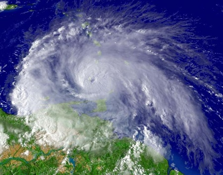

La Marine de Guerre

La marine de Rome
Sans GPS ni boussole, les marins romains naviguaient grâce aux étoiles la nuit, notamment l'étoile polaire pour trouver le nord. Le jour, ils suivaient les côtes pour ne pas se perdre et observaient le vent et les vagues pour s'orienter. C'était une navigation risquée — une tempête pouvait tout détruire en quelques heures.
Source : Wikipedia — Marine romaine
La marine de Carthage
Les bateaux carthaginois étaient construits avec du bois de cèdre du Liban, un bois léger, solide et résistant à l'eau — idéal pour des navires rapides. Leurs coques étaient enduites de poix et de goudron pour les imperméabiliser. Carthage disposait aussi de ports militaires secrets appelés cothons, des ports circulaires fermés qui cachaient leur flotte aux yeux des ennemis.
Source : Wikipedia — Marine carthaginoise
La grande tempête de 255 av. J.-C.
C'est l'une des plus grandes catastrophes de l'histoire romaine. Après une victoire au Cap Bon en Afrique, la flotte romaine rentre en Italie. En chemin, elle est surprise par une violente tempête au large de la Sicile.
En une seule nuit, Rome perd environ 300 bateaux et près de 100 000 soldats — non pas face à un ennemi, mais face à la mer. Malgré ce désastre, Rome reconstruit sa flotte et continue la guerre sans se rendre.
Source : Wikipedia — Première guerre punique